Elision - Retina Multi-Purspose WordPress Theme
Responsive Retina AJAX/Parallax Theme
- created: 12/11/2013
- latest update: 01/9/2014
- by: Qode Interactive
- email: support@qodeinteractive.com
Welcome to Elision - Retina Multi-Purspose WordPress Theme
Introduction
Installing ELISION Theme
You can install this WordPress theme using two installation methods:
- Using WordPress Administration Panel
- Copying theme files via ftp
METHOD 1
Using elision.zip found in ZIP file you downloaded from ThemeForest.com you should perform the following steps:
- Login to WP admin
- Go to Appearance > Themes option and click on it to load new page
- Select Install Theme tab at the top of the panel to load new page
- Click on Upload option at the top of the panel to load new page
- Click on Browse button and locate elision.zip on your file system
- Click on Install Now button
- Once installation is complete you can activate Elision theme
METHOD 2
Using elision directory found inside of elision.zip file located inside ZIP file you downloaded from ThemeForest.com you should perform the following steps:
- Using FTP client you should login to server where your WordPress web site is hosted
- Using FTP client you should navigate to /wp-content/themes/ directory under your WordPress web site’s root directory
- Using FTP client upload elision directory to themes directory on remote server
- Once installation is complete you can activate Elision theme
Installing WooCommerce
If you plan to build online shop with our theme, please read WooCommerce section of this documentation before you install demo content.
Importing Demo Content
If you would like to learn the best practice of using ELISION theme, you can import content from our demo web site. Our theme comes with one-click import module. Importing demo web site is performed by following these steps:
- Open WP Admin Panel
- Click on Qode Options > Qode Import from left menu
- Select All from Import select box
- Check Import attachments checkbox if you want to import images
- Click on Import button
In order to import LayerSlider demo slider, you need to locate xml export folder in the theme's All files & documentation zip file you can download from your Downloads page at ThemeForest. You will find LayerSlider_Export.json file there. Just go to LayerSlider option in the left menu and upload that file under Import section.
Upgrading ELISION Theme
You can upgrade our theme by performing following steps:
- Download latest theme zip file from ThemeForest
- Extract it and locate elision.zip
- Extract elision.zip and locate elision folder
- Copy/Replace the content of elision folder to /wp-content/themes/elision folder of your web site.
Feel free to ask us any question about using features ELISION theme offers.
Theme Options
Access the “Qode Options” in the left menu. Some of these options may be overridden locally, in the shortcode or page settings (e.g. text color in editor or page title layout in the Qode Custom Fields while editing post/page/portfolio item).
Most options in these tabs are self-explanatory. Explanations for options that need further clarification will be provided here.
GLOBAL OPTIONS
Colors
The elements of ELISION theme are made up from main colors. Also, you can edit following colors: Background colors (content & body), Highlight color, Selection color. Those options provide global color management, while you can still override them in other sections, shortcodes and custom fields when editing pages, posts and portfolio items.
Google Fonts
Here you can choose default google font which will get applied to body tag. Further in options panel you can choose font options for many elements.
Page transition
Choose between predefined AJAX animations between pages. This scenario will be applied to all pages. Eventually it is possible to change the animation style for each page individually (options below text editor when editing pages/posts). Please note that you can turn off AJAX for certain pages there. That might be important for some other plugins to work properly.
Loading animation
Here you can turn ON/OFF display of loading image while navigating between pages using page transitions (AJAX)
List of internal URLs loaded without AJAX (separated with comma)
Here you can put URLs of the pages you want to get loaded without AJAX. You should enter full url (including domain part) here, for example: http://www.mydomain.com/forum/
Custom CSS and Custom JS
Advanced users can add their own code here.
Meta Keywords
Add relevant keywords separated with commas to improve SEO.
Meta description
Enter a short description of the website for SEO.
GENERAL FONT OPTIONS
This section allows you to setup font properties for different elements of the site.
HEADER AND FOOTER
Header in grid
Set if header is full width or grid (content) width
Show header top area
This setting applies to Header Left and Header Right widgets.
Header style
If chosen will make header elements (logo, main menu, side menu icon) in chosen predefine style: dark or light
Menu in center
If selected to Yes, menu will be aligned center, otherwise it wil be aligned to right edge of header container
Top background color
This is background color of the top header widget area
Bottom background color (initial and sticky)
This is background color of the header
Transparency (initial and sticky)
This is transparency of the header
Logo
Add website logo here. You can upload different logo images for light & dark header style (if used) and for sticky header (displayed on scroll)
Center logo
If selected will display logo centered above the menu
Header height (initial and sticky)
This option is important for defining the height of whole header including the logo
Menu options
You fully customize layout of the menu by editing all properties here
Mobile menu style
You can customize menu displayed on last 2 responsive sizes.
TItle
You can setup here global page title properties which can be overriden in qode custom fields for each post/page.
Title style allows you to choose if you want to display title text inside title area or at the bottom of it.
Responsive title image allows you to make image resize to fit into browser width. Title are height will be defined by height of the image after it resizes to fit the browser width.
Parallax title image makes image stay fixed while scrolling the page.
TItle height allows you to set height of title area and is used if image is not set to be responsive.
Title position allows you to set position of title text.
Footer in grid
Set if footer is full width or grid (content) width
Show footer top
This option will show main footer widget area. You can define its content in Appearance > Widgets > Footer Columns 1-4
Footer top columns
Set how many columns footer top area has.
Show footer bottom
This option will show bottom footer widget area. You can define its content in Appearance > Widgets > Footer Text
ELEMENTS
Here you can define style properties of different elements.
SIDE AREA
Here you can manage side area properties (show/hide and colors)
CONTENT BOTTOM AREA
Here you can set global settings for content bottom area displaying just above footer. You can choose which custom widget area should be used to fill in this area with content. For example, you can create Call to Action widget.
PARALLAX
Parallax speed
Change the speed of parallax scrolling. Higher value will increase the speed of scrolling. Default speed is 1. Zero will result in a not-moving background.
PORTFOLIO
Here you can define global setting for portfolio single page: portfolio style (layout of the page), lightbox for single page (turn it on/off), number of columns used for portfolio gallery style.
BLOG
Here you can define global properties for blog list and blog single pages. You can override those properties at page/post level.
CONTACT
Mail send to
Here you should enter email address. Contact form data will be sent to this address.
Email from
Here you should enter email address. This address will be displayed as sender when sending contact form data.
reCaptcha
You can enable reCaptcha and enter keys generated here http://www.google.com/recaptcha/whyrecaptcha.
Pin image
You can upload your own image used to mark your address on the map
Google map address (1-5)
You can define up to 5 different locations do display on your map. You should enter address in normal address format, for example: 100 Battery Street, San Francisco, USA.
Google map zoom
You can enter here google map zoom level (default is 15).
Google map height
You can define here height of map area on the page
Google map style & Google map color
If style is enabled, you can set color used to paint the map
Google map scroll on mouse wheel
Turn ON/OFF scrolling of the page when mouse is over the map. That disables/enabled map zoom.
404 PAGE
Here you can define content of 404 error page.
SOCIAL
Here you can manage social share features.
Menu
ELISION theme comes with "mega" menu. It supports three type of sub-menu options at the sime time:
- normal drop-down menu (default option)
- wide menu
- wide menu with icons (Font Awesome Icons)
Type option is applied only to 1st level menu items.
There are three additional options that apply only to wide menu type:
- Don't link - will show label without link
- Don't show - it will not render that menu option (it will still render its children options)
- Wide menu position (default is center, left or right)
Also, you can add widgets to the menu if you choose widgets area in the "Custom widget area" select box (listing custom sidebars in Appearance > Widgets)
Main Menu Dropdown examples
- Default Menu Dropdown
- Wide Dropdown
- Wide With Icons Dropdown
- Wide With Position Dropdown
Default Main Menu Dropdown

Wide Dropdown
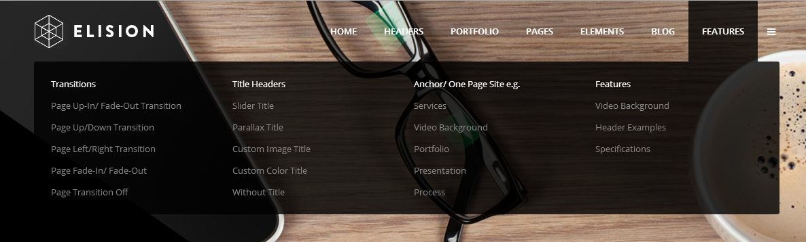
Admin options for wide dropdown menu
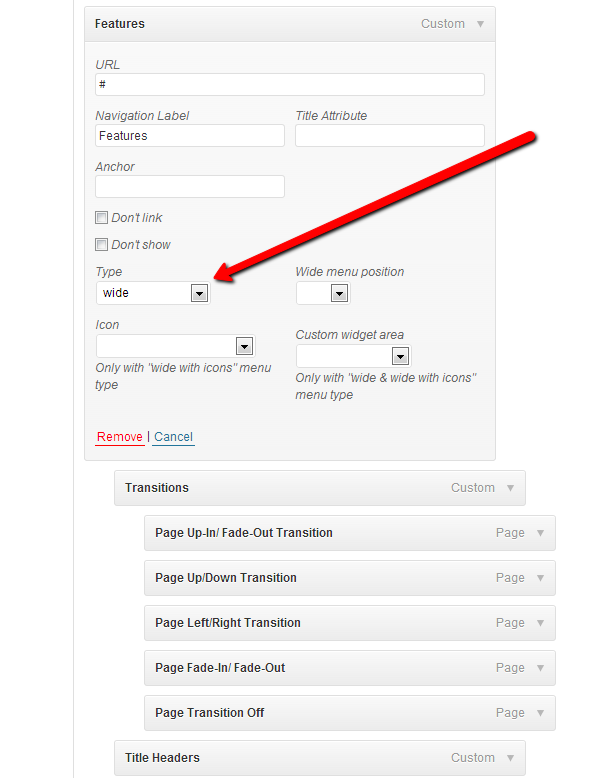
Wide With Icons Dropdown
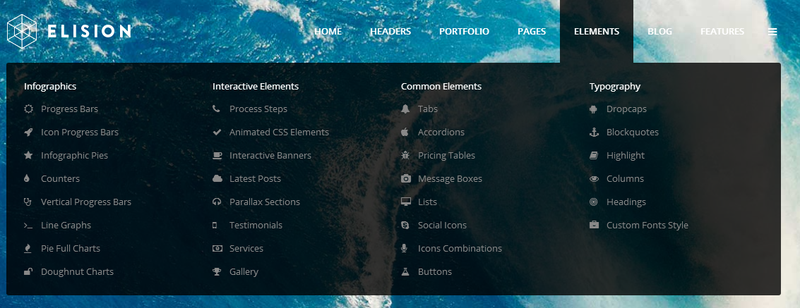
Admin options for wide with icon dropdown menu
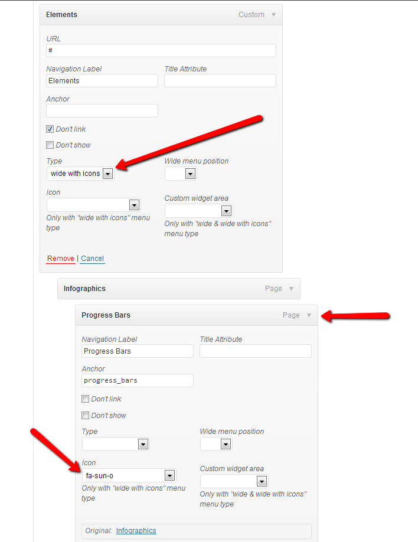
Wide With Position Dropdown
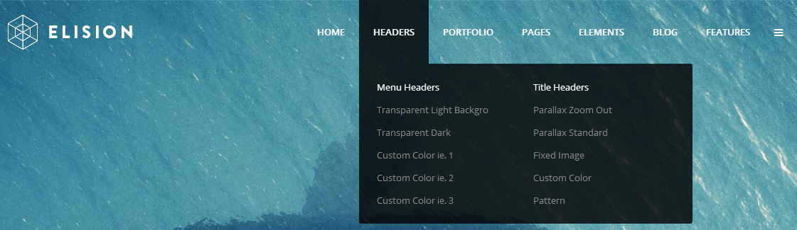
Admin options for wide with position dropdown menu
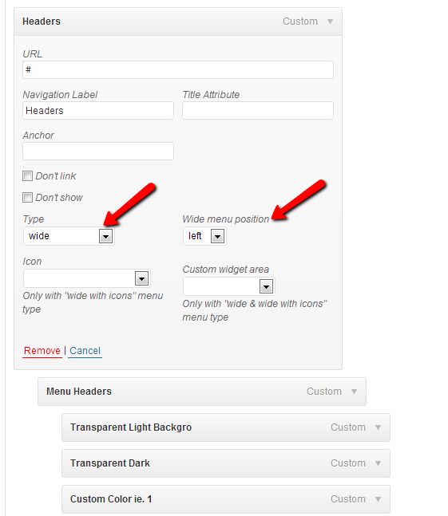
ANCHORS (ONE PAGE SITE FUNCTIONALITY)
You can add anchors to menu items in order to scroll to the element on the page. In order to do that you need to perform following steps:
- You need to set anchor ID(s) while editing page. You can do that by editing properties of the row element in Visual Composer. You will find Anchor ID field there. You can type in any text there (without empty spaces).
- You can repeat step 1 for several rows of the page
- You can how edit menu and add multiple page items to the menu, all for the same page containing anchors.
- Edit each menu item and type in ID of the anchor in Anchor field
Example of anchor usage
http://demo.qodeinteractive.com/elision/common-elements/#social_icons
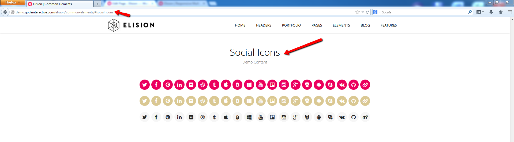
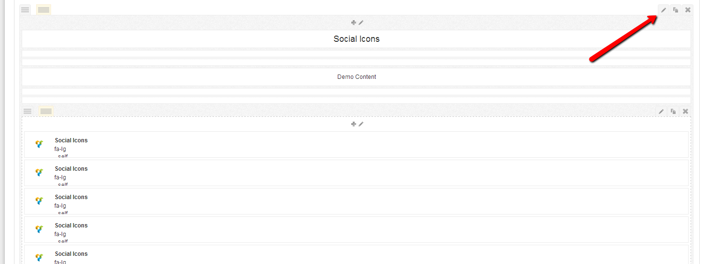
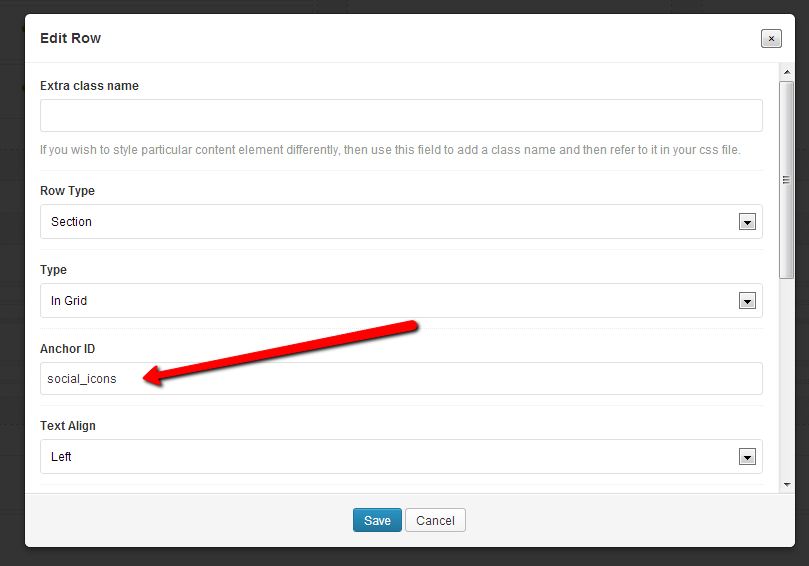
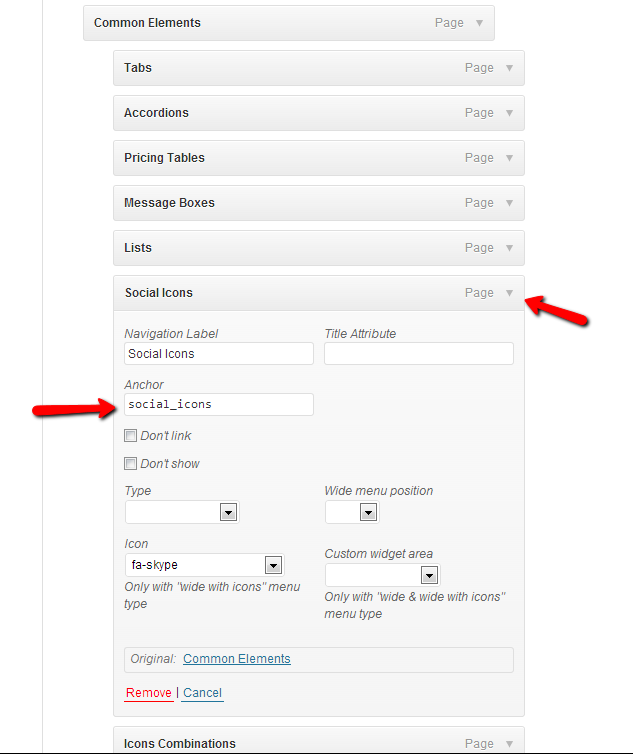
Widgets
Elision Theme comes with following custom widgets and widget areas:
- Sidebar - it's used only for blog posts
- Sidebar Page - it's used only for pages
- Header Left - here you can add anything to the left side of header next to the menu
- Header Right - here you can add anything to the right side of header next to the menu
- Side Area - here you can add widgets to side menu
- Footer Column 1, Footer Column 2, Footer Column 3, Footer Column 4 - here you can add content to footer columns (1-3) in footer top area when four columns layout is selected
- Footer Text - here you can add for example copyright
Elision theme allows adding mutliple sidebars. You can define your custom widget areas (sidebars) from the Custom Widget Area section in the bottom right corner of this page.
You can see example of widgets configurion from our demo web site here:
Blog
BLOG LIST
In order to create a blog page, first create a new page and select one of 3 Blog Templates listed in Template field located in the “Page Attributes” section:
- Blog Large Image - Displayes featured image in full width
- Blog Large Whole Post - Displays featured image in full width and whole blog post content
- Blog Masonry - creates masonry layout
- Blog Small Image - displays featured image on the left side and excerpt on the right side
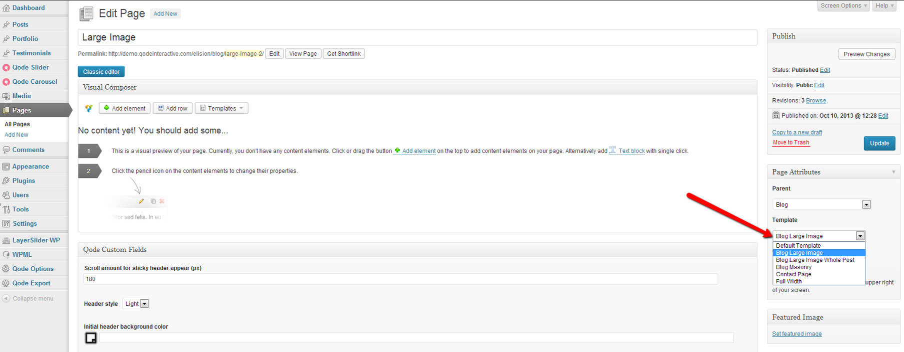
If desired, one of four sidebars can be turned on in the options below editor in Qode Custom Fields section.
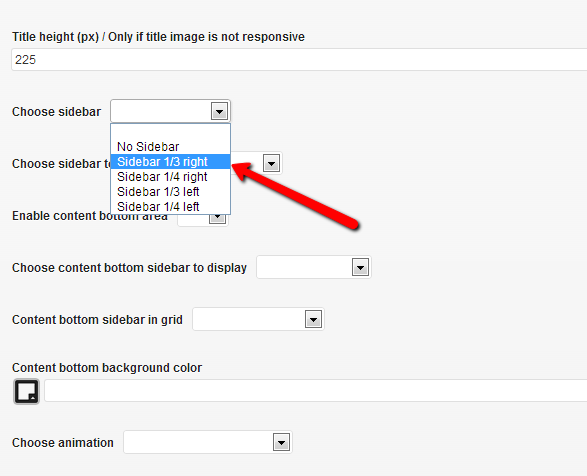
Choose sidebar to display
You can choose here custom sidebar you created. If empty, it will use Sidebar Page.
Choose blog category
You can display post of selected category
Posts per page
Enter number of posts displayed on each page
BLOG SINGLE
ELISION theme blog uses featured images as primary images displayed on the blog list page. Featured images are also used as first images in every post by default.
ELISION theme supports custom post formats. You can choose one of the following formats:
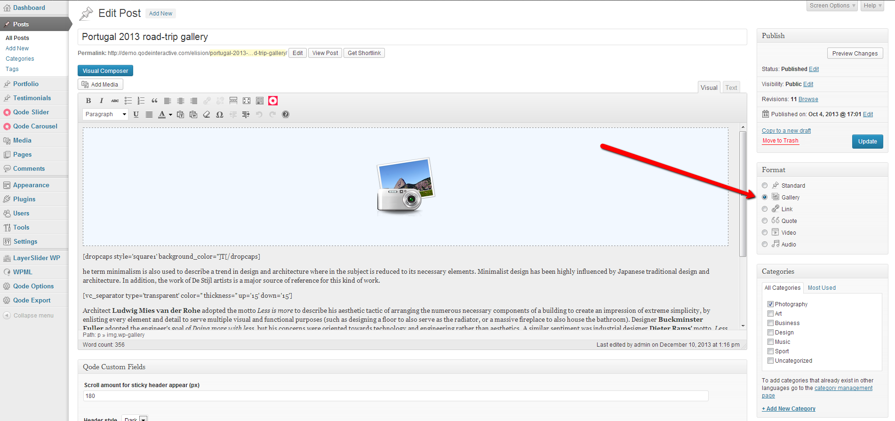
Each format creates custom fields section below editor. For example, video format creates this:
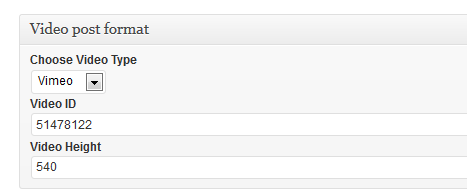
Make sure custom sections are enabled in Screen Options found in the top right corner of WP dashboard.
Similar as blog list, blog single also allows managing sidebar options in Qode Custom Fields. If Choose sidebar to display field is blank, Sidebar widget area will be used.
Pages
In this section we will explaid how page templates work.
Available page templates:
- Default Template
- Blog Large Image
- Blog Large Image Whole Post
- Blog Masonry
- Contact Page
- Full Width
Default Template
http://demo.qodeinteractive.com/elision/without-sidebar/
Default Template pages are in grid.
Blog Large Image
http://demo.qodeinteractive.com/elision/blog/large-image-2/
Blog Large Image Whole Post
Difference between Blog Large Image Template and Blog Large Image Whole Post Template is that blog large image whole post template displays whole single post content.
Blog Masonry
http://demo.qodeinteractive.com/elision/blog/masonry/
Contact Page
http://demo.qodeinteractive.com/elision/contact/
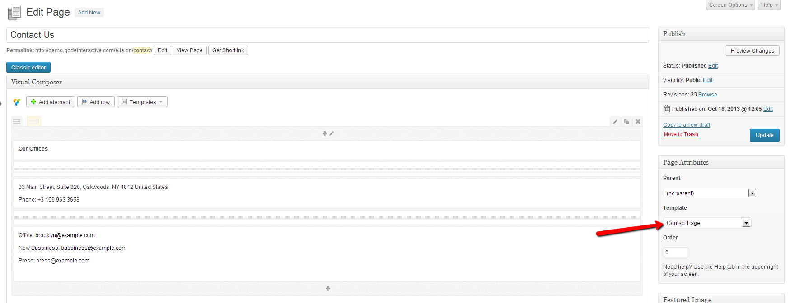
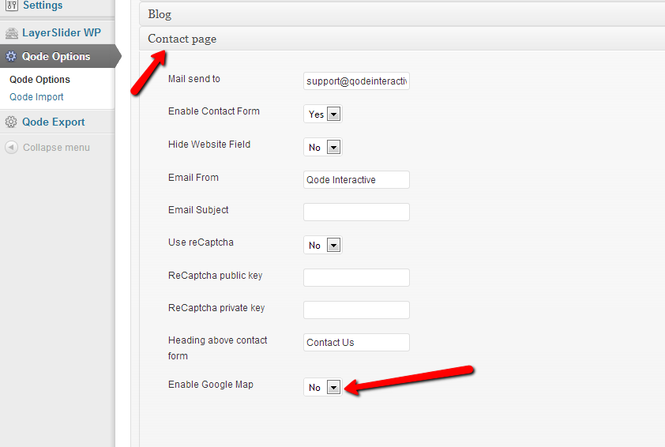
If you want to enable Google map you need to select yes and save. Then you need to go again to Contact page tab in Qode options and you will see additional Google map fields.
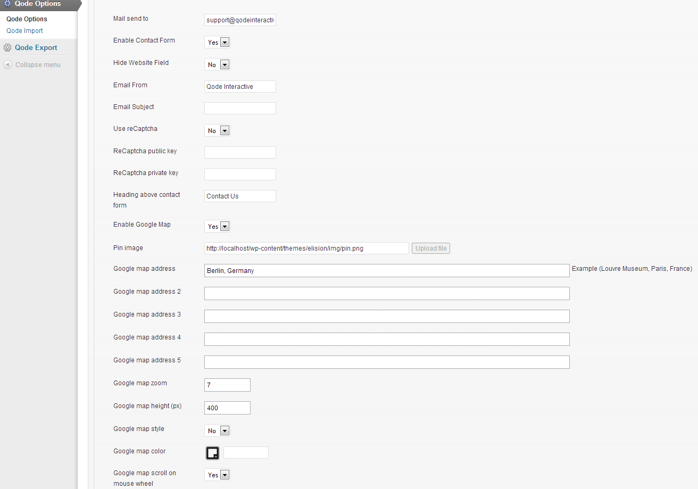
Full Width
http://demo.qodeinteractive.com/elision/
Default grid for Full Width template pages is full width. For this template you can combine full width sections with sections that are in grid.
Qode Custom Fields
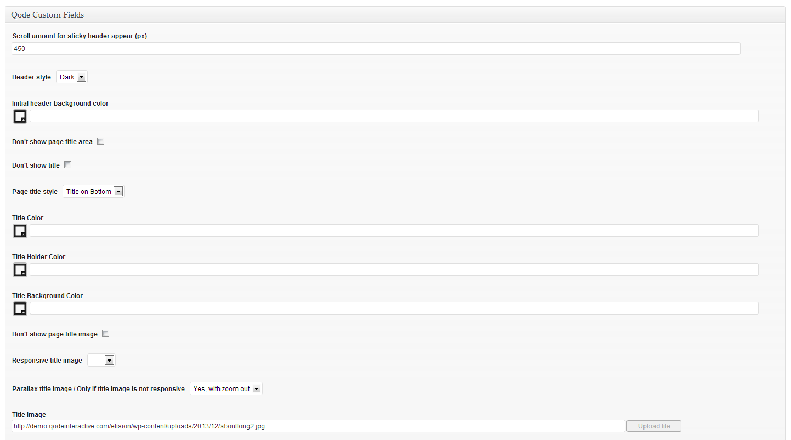
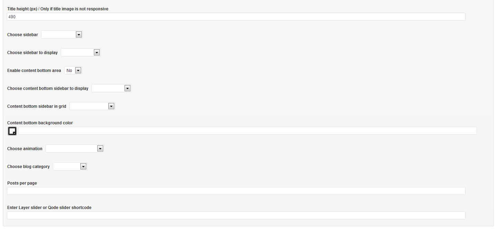
Scroll amount for sticky header appear (px) - amount of scroll after which sticky header appears
Header style - with this field you can set style for header menu for specific page. Predefined values are Dark and Light
Initial header background color
Don't show page title area - check this field if you want to remove title area
Don't show title - check this field if you want to remove only title in title area
Page title style - style for title
- Title on Bottom ( http://demo.qodeinteractive.com/elision/about-our-process/ )
- Standard ( http://demo.qodeinteractive.com/elision/supernatural-fx-showreel/ )
Title Color
Title Holder Color
Title Background Color
Don't show page title image - check this field if you want to remove title image in title area
Responsive title image
- Yes
- No
Parallax title image / Only if title image is not responsvie
- Yes
- Yes with Zoom out
- No
Title image
Title height (px) / Only if title image is not responsive - this is height for title area
Choose sidebar
- No Sidebar
- Sidebar 1/3 right
- Sidebar 1/4 right
- Sidebar 1/3 left
- Sidebar 1/4 left
Choose sidebar to display - choose custom sidebar that you want to have on single post / page, you can create custom sidebar in Appearance -> Widgets -> Custom Widget Area
Enable content bottom area
- Yes
- No
Choose content bottom sidebar to display - choose custom sidebar that you want to have on this area
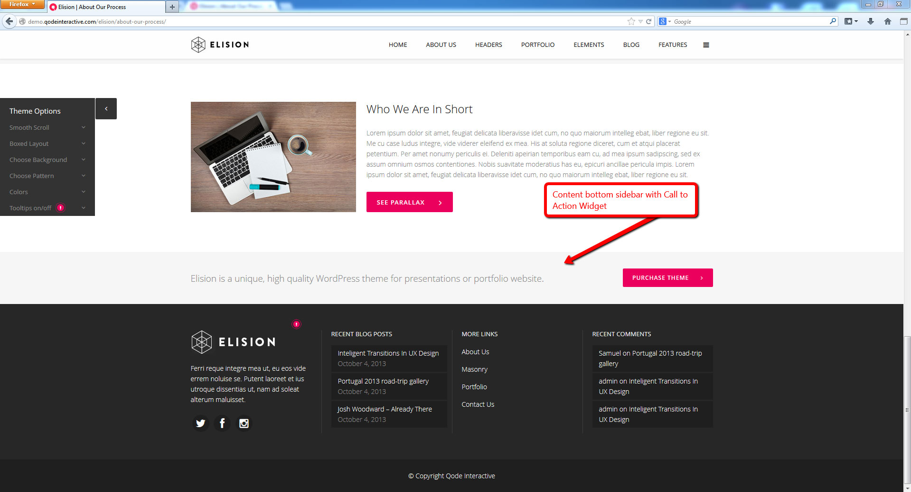
Content bottom sidebar in grid
- Yes
- Yes with Zoom out
- No
Content bottom background color
Choose animation - with this field you can control page animation only for this page
- No Animation
- Up / Down
- Fade
- Left / Right
- Up - Down In / Fade Out
Choose blog category - this field is used only for Blog templates.
Posts per page - this field is used only for Blog templates.
Enter Layer slider or Qode slider shortcode - in this field you can paste layer slider or qode slider shortcode. Container for this area is full width.
Portfolio
Portfolio is created as custom post type and can be found in the left WordPress menu.
Adding Portfolio items is the same as creating blog posts. Featured image is used for portfolio lists.
You can choose between 6 different layouts listed in Choose portfolio single view field.
Portfolio images are added through “Portfolio Images” link below editor.
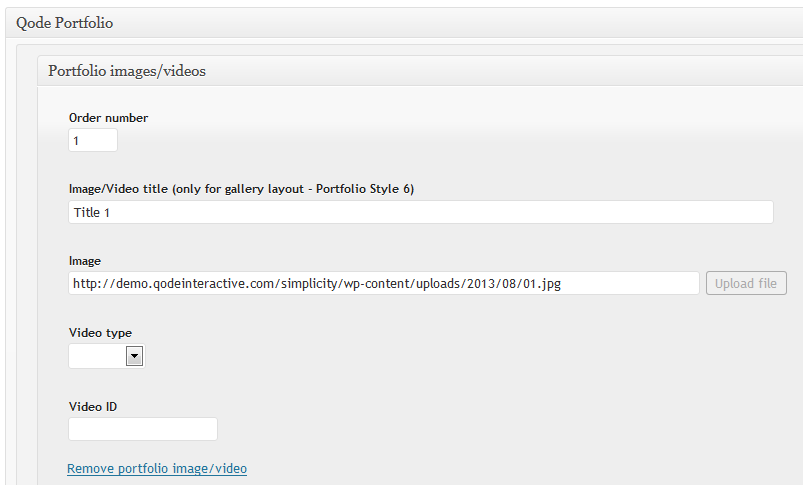
Also our theme allows adding videos together with images. Please not that when adding new Portfolio image/video item, if you want video to display, you should leave image field empty. Also, in the Video field, you should just enter ID, based on Video type chosen (Vimeo or Youtube).
Create custom label name (e.g. Project URL) using the “Option Items”.
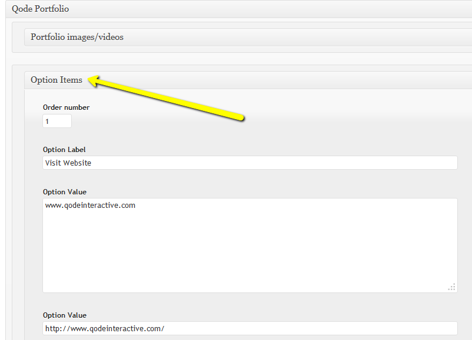
PORTFOLIO LIST
Portfolio list can be added from Visual Composer by adding Portfolio element found in By Qode section of the Add New Element window. Portfolio list has following properties:
- Type - used to define layout of the list
- Columns - choose number of columns in the row
- Order by & Order - set how items are ordered
- Filter - set if filter is displayed
- Lightbox - set if opening images in lightbox is enabled
- Show Load More - set if Load More button is enabled
- Number - set number of items displayed on first load (-1 is all)
- Category - enter category slug if you want to list items from selected category. Note that filter will be generated from sub-categories of selected category
- Selected Project - list selected project IDs delimited by comma
- Title Tag - set how title tag should be rendered
Testimonials
Testimonials is created as custom post type and can be found in the left WordPress menu.
When editing single testimonial, you need to enter following information:
- Author - please note that if you want to add aditional information about author (for example his company), delimit its name and other information wtih comma
- Text - this is testimonial text
TESTIMONIAL LIST
Testimonial list can be added from Visual Composer by adding Testimonials element found in By Qode section of the Add New Element window.
Visual Composer
Elision Theme comes with awesome Visual Composer plugin. Its documentation is included with our documentation.
You can find our elements (shortcodes) added to it in the By Qode section of New Element wizard.
Please note that our shortcodes have custom attributes.
Some of existing Visual Composer elements are updated with our custom properties. For example Row shortcode has following important custom attributes:
- Row Type - Row (classic row element), Section (when selected Type field is shown and there you can set if you want to keep content in the grid - width of the content or full width), Box (allows you to set background color and border), Expandable (displays only show more button and content is displayed on click).
- Anchor ID - explained in the Menu section of this documentation
Qode Slider
- Slides
- Add New Slide
- Sliders
In "Slides" section you can see all slides that you created.
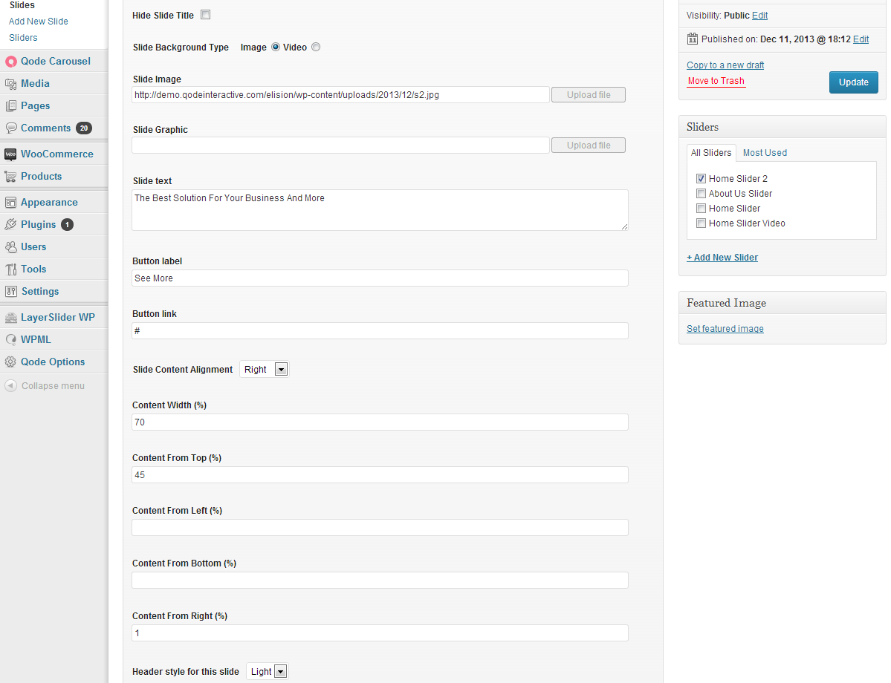
Add New Slide - Click here to add your first slide. First you need to upload some image for your slide background. Find Slide Image field and upload your image.
In order to use video background instead of slide image, you need to select Video Background type and to make sure you entered correct path for 3 types of video: webm, mp4 and ogv. You can also enter path for preview image and set if you want to have transparent overlay over video.
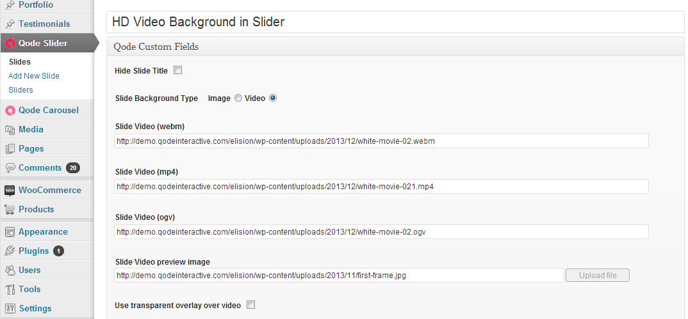
- Hide Slide Title
- Slide Background Type
- Slide Graphic
- Slide Text
- Button Label and Link
Hide Slide Title - To hide slide title
Slide Background Type - Choose between video background and image
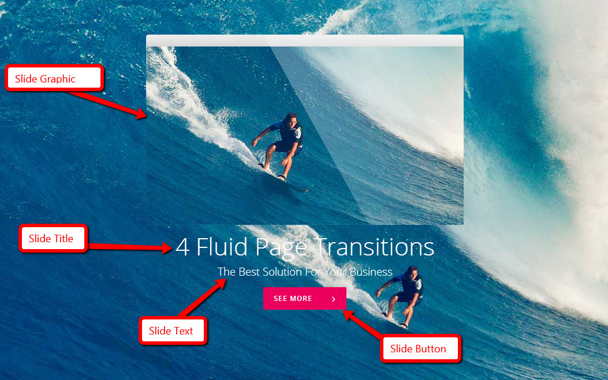
Additional slide options:
- Slide Content Alignment
- Content Width
- Content From Top
- Content From Bottom
- Content From Left
- Content From Right
- Header style for this slide
Slide Content Alignment - With this field you can control alignment of slide's content
Content Width - With this field you can set content's width in percentages
Content From Top, Bottom, Left and Right - With this fields you can control position of slide's content
Header style for this style - With this field you can control header style for slide, default value is determined by global header settings. You have two predefined header style available (dark / light).
Sliders
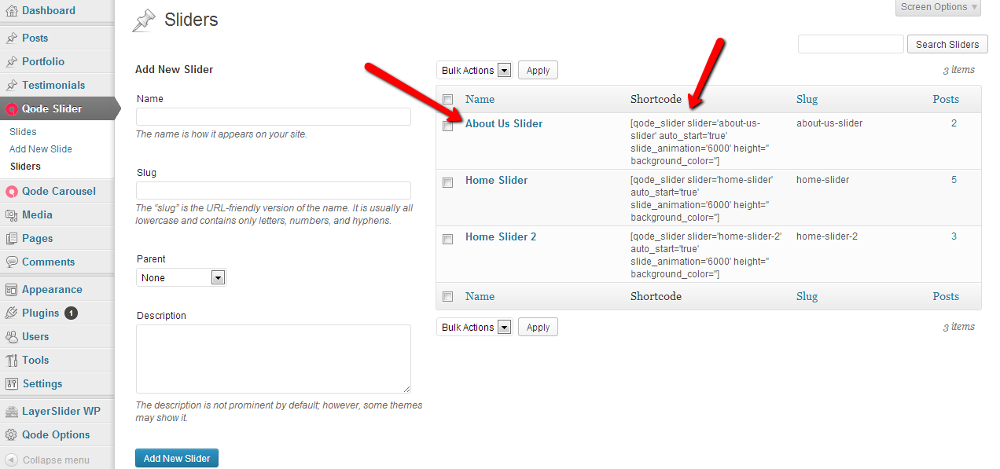
In this section you can create new sliders. Necessary fields are Name and Slug. When you created new slider it will appear in table on the right part of the screen with Shortcode data generated and ready for usage.
For example, this shortcode string is generated for About Us Slider.
[qode_slider slider='about-us-slider' auto_start='true' slide_animation='6000' height='' background_color='']
Two additional fields for each slider
- Effect on header (dark/light style) - With this option you can disable changing of header style dark / light (default value is no)
- Show prev/next thumb - With this option you can enable preview thumbnails of prev / next slide (default value is no)
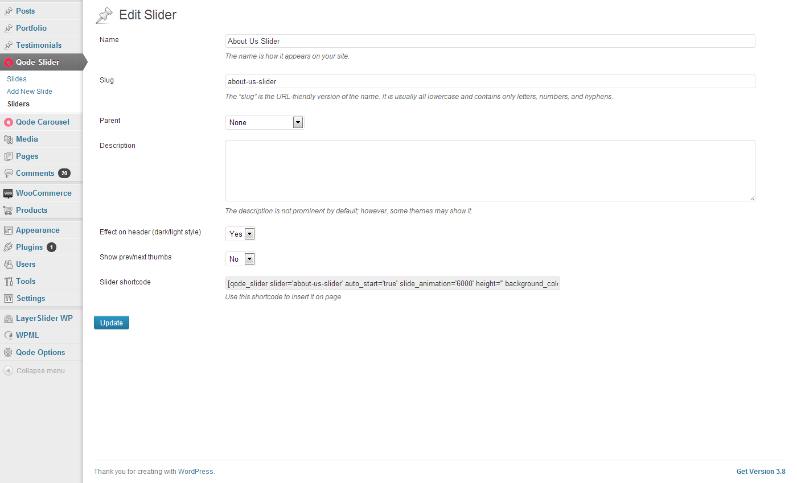
Here is the explanation of shortcode attributes:
- slider - this is slider's slug
- auto_start - controls whether slide animation starts automatically (default value is true)
- slide_animation - duration of slides animations in ms (default value is 6000ms)
- height - slide's height in px (if you don't set anything slider will be FULL SCREEN)
- background_color - slide's background color
Example of About Us Slider usage:
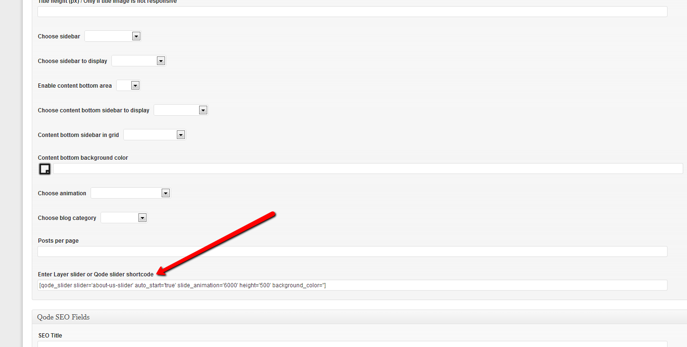
In order to use created slider you just need to copy/paste generated shortcode string from Sliders section to the some page's Enter Layer slider or Qode slider shortcode field in Qode Custom fields section.
Custom Shortcodes
Here is the list of Visual Composer shortcodes altered in our theme
- Accordion
- Row
- Separator
- Separator With Text
- Tabs
- Video
Accordion
- Style: Accordion, Toggle, Accordion With Icon and Toggle With Icon
- Title: Title label for accordion section heading
- Icon: Font Awesome icons list (Font Awesome Icons)
- Icon Color
- Title Color
- Background Color
- Title Tag: h2, h3, h4, h5 and h6
Accordion / Toggle
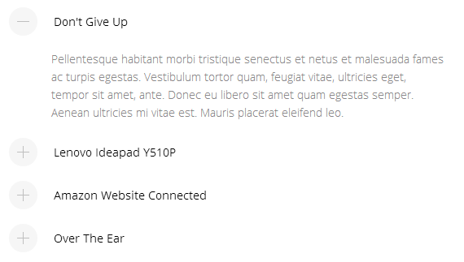
Accordion / Toggle With Icon
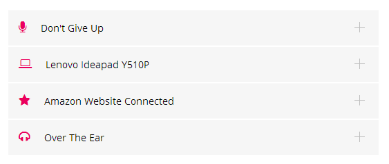
Row
- Row Type: Row, Section and Expandable
- Type (Only When Row Type is Section): In Grid and Full Width
- Anchor ID:
- Text Align: Left, Right and Center
- Video Background (Only When Row Type is Section)
- Video Overlay (Only When Row Type is Section)
- Video Background webm file (Only When Row Type is Section)
- Video Background mp4 file (Only When Row Type is Section)
- Video Background ogv file (Only When Row Type is Section)
- Video Preview Image (Only When Row Type is Section)
- Background Color (Only When Row Types is Section)
- Border Color (Only When Row Types is Section)
- Padding Top (Only When Row Type is Section)
- Padding Bottom (Only When Row Type is Section)
- More Button Label (Only When Row Type is Expandable)
- Less Button Label (Only When Row Type is Expandable)
- Button Position (Only When Row Type is Expandable): Left, Right and Center
- Color (Only When Row Type is Expandable)
- CSS Animation (Row - Row Type): Elements Shows From Left Side, Elements Shows From Right Side, Elements Shows From Top Side, Elements Shows From Bottom Side, Elements Shows From Fade
- Transition Delay (Row - Row Type)
Row is container element to which you can add other elements (shortcodes). This element is always full width and you can set this parameters: CSS Animation, Transition Delay, Anchor ID and Text Align. With CSS Animation you can set entering animation for this element and with Transition Delay you can set delay for chosen CSS Animation. Anchor ID is used in our anchor functionality. You can add row ID which can be referenced in main menu Anchor ID field.
Section is also container element that has some predefined settings (padding). You can set all row parameters except CSS Animation and Transition Delay. The main difference between section and row is that section can be full width or in grid. Also, you can set background color, border color and add video background just for section element.
Expandable is full width container element which is initially closed. This element has two buttons which open / close this section when clicked. You can add every shortcode to this container element.
Separator
- Type: Normal, Transparent, Full Width and Small
- Color
- Thickness: Separator height
- Top Margin
- Bottom Margin
- Position (Only When Type is Small): Left, Right and Center
Separator With Text
- Title
- Title Position: Align Left, Align Right and Align Center
- Title Color
- Border: Yes / No
- Border Color
- Background Color
Tabs
- Style: Horizontal Center, Boxed, Vertical Left and Vertical Right
- Title
Tabs - Horizontal Center
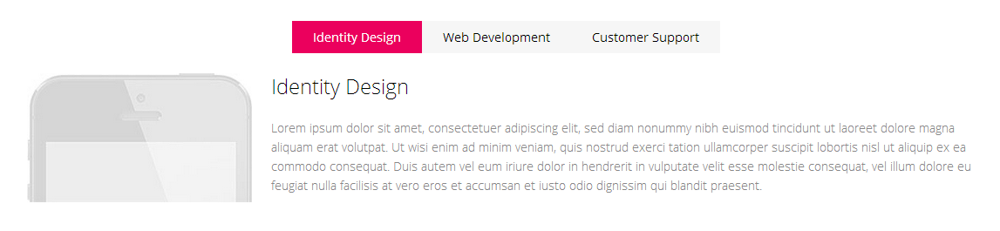
Tabs – Boxed
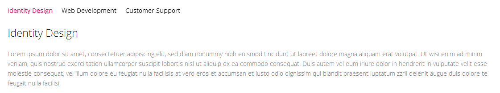
Tabs – Vertical Left
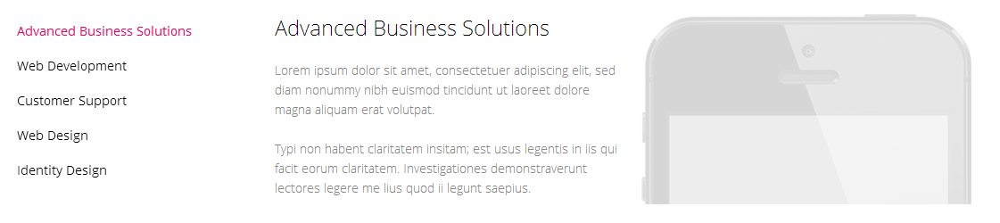
Tabs – Vertical Right
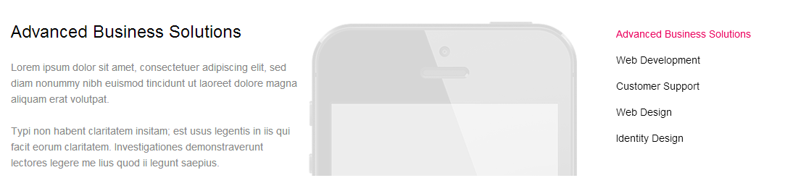
Video
- Video Link (url)
Here is the list of custom shortcodes added to Visual Composer with our theme
- Action
- Blockquotes
- Button
- Counter
- Custom Font
- Dropcaps
- Highlight
- Image Hover
- Image With Text
- Image With Text Over
- Icon
- Icon List Item
- Icon With Text
- Latest Posts
- Line Graph
- List - Ordered
- List - Unordered
- Message
- Parallax
- Pie Chart
- Pie Chart With Icon
- Pie Chart 2 (Pie)
- Pie Chart 3 (Doughnut)
- Portfolio List
- Portfolio Slider
- Pricing Table
- Progress Bar - Horizontal
- Progress Bar - Vertical
- Progress Bar - Icon
- Qode Carousels
- Service
- Social and Brands Icons
- Social Share
- Steps Animation
- Testimonials
Action
- Type: With Border and Without Border
- Background Color
- Border Color
- Link
- Link Target: Self, Blank and Parent
- Content
With Border is type of action shortcode where action container has border outline
Blockquote
- Text
- Text Color
- Width
- Line Height
- Background Color
- Border Color
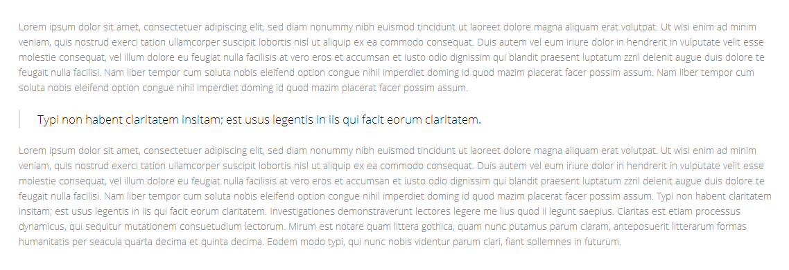
Button
- Size: Default, Tiny, Small, Medium, Large and Big Large
- Text
- Icon: Font Awesome icons list (Font Awesome Icons)
- Link
- Link Target: Self, Blank, Top and Parent
- Color
- Background Color
- Border Color
- Font Style: Normal and Italic
- Font Weight: 100, 200, 300, 400, 500, 600, 700, 800 and 900
- Text Align: Left, Right and Center
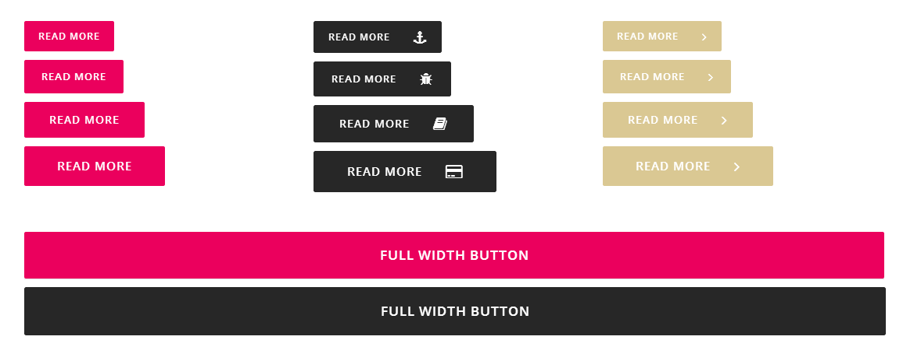
Counter
- Type: Zero Counter and Random Counter
- Position: Left, Right and Center
- Digit
- Font Size
- Font Color
Main difference between Zero counter and Random Counter is that zero counter starts animation from zero to defined number and random counter animates all numbers starting from random number.
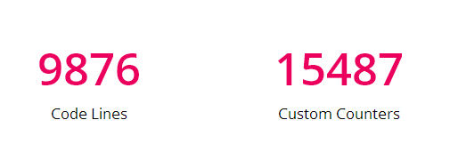
Custom Font
- Font Family: You can add here system fonts (like Arial, Times New Roman etc.) and Google Font if you include it in Qode options
- Font Size
- Line Height
- Font Style: Normal and Italic
- Text Align: Left, Right and Center
- Font Weight
- Color
- Text Decoration: None, Underline, Overline and Line Through
- Background Color
- Padding
- Margin
- Content
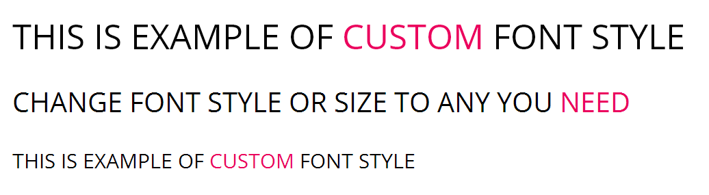
Dropcaps
- Type: Normal, Square and Circle
- Letter
- Letter Color
- Background Color (Only When Type are Square or Circle)
- Border Color (Only When Type are Square or Circle)
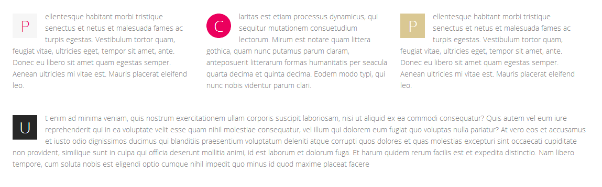
Highlight
- Color
- Background Color
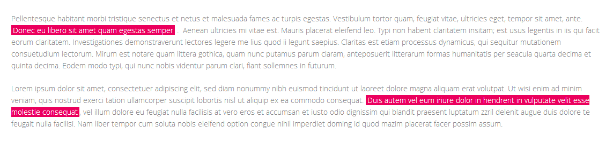
Image Hover
- Image
- Title
- Title Color
- Title Tag: h2, h3, h4, h5 and h6

Image With Text
- Image
- Title
- Title Color
- Title Tag: h2, h3, h4, h5 and h6
- Content
Image With Text Over
- Width: 1/2 , 1/3 and 1/4
- Image
- Icon: Font Awesome icons list (Font Awesome Icons)
- Icon Size: Tiny, Small, Medium, Large and Very Large
- Icon Color
- Title
- Title Color
- Title Size
- Title Tag: h2, h3, h4, h5 and h6
- Content
Default width for image with text over shortcode is 100%.
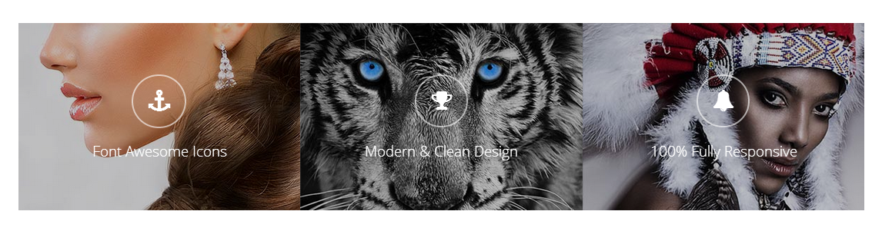
Icon
- Icon Size: Tiny, Small, Medium, Large and Very large
- Custom Size
- Icon: Font Awesome icons list (Font Awesome Icons)
- Type: Normal, Square and Circle
- Position: Normal, Left, Right and Center
- Border: Yes / No
- Icon Color
- Background Color
- Margin
- Icon Animation: Yes / No
- Icon Animation Delay (ms)
- Link
- Target: Self, Blank and Parent
If you set Icon Animation attribute to yes icon will fade in when it comes in viewport.
Icon List Item
- Icon: Font Awesome icons list (Font Awesome Icons)
- Icon Color
- Icon Background Color
- Icon Border Color
- Title
- Title Color
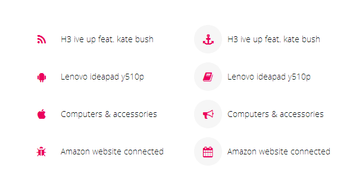
Icon With Text
- Box Type: Normal and Icon in Box
- Box Border: Yes / No
- Box Border Color
- Icon: Font Awesome icons list (Font Awesome Icons)
- Icon Type: Normal, Square and Circle
- Icon Size: Tiny, Small, Medium, Large and Very Large
- Custom Icon Size
- Icon Animation: Yes / No
- Icon Animation Delay (ms)
- Image
- Icon Position: Top and Left
- Icon Margin
- Icon Color
- Title
- Title Tag: h2, h3, h4, h5 and h6
- Title Color
- Text
- Text Color
- Link
- Link Text
- Link Color
- Target: Self, Blank and Parent
If you set Icon Animation attribute to yes icon will fade in when it comes into the viewport.
Icon With Text - Normal

Icon With Text - Icon in Box

Latest Posts
- Number of Posts per Row: 2, 3 and 4
- Number of Rows: 1,2 and 3
- Order By: Menu Order, Title and Date
- Order: ASC and DESC
- Category Slug
- Text Length
- Title Tag: h2, h3, h4, h5 and h6
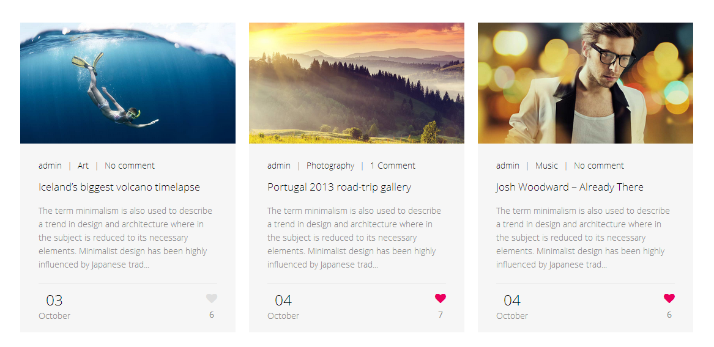
Line Graph
- Type: Rounded edges and Sharp edges
- Width
- Height
- Custom Color
- Scale Steps: Number of steps on y-axis
- Scale Step Width: Width between scale steps on y-axis
- Labels
Line Graph - Rounded edges
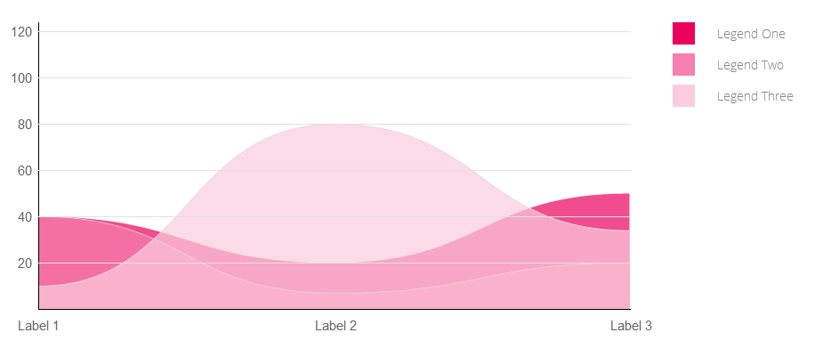
Line Graph - Sharp edges
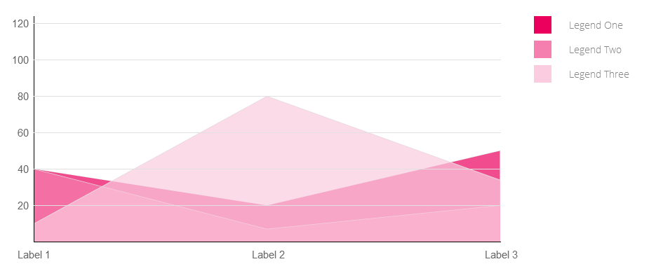
List – Ordered
- Content
List – Unordered
- Style: Circle and Number
- Animation List: Yes / No
- Font Weight: Default, Light, Normal and Bold
- Content
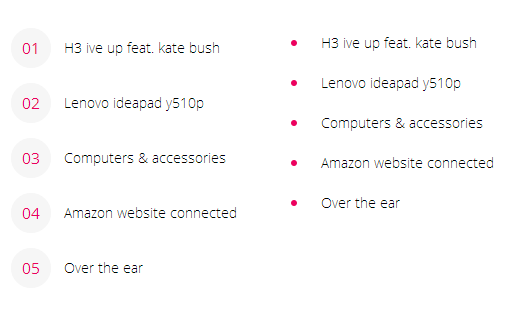
Message
- Type: Normal and With Icon
- Background Color
- Border Color
- Close Button Style: Dark and Light
- Content
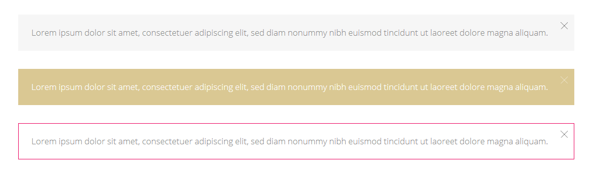
Parallax
- Title
- Background Image
- Section Height
- Content Position: Center, Left and Right
- Anchor
http://demo.qodeinteractive.com/elision/interactive-elements/#parallax
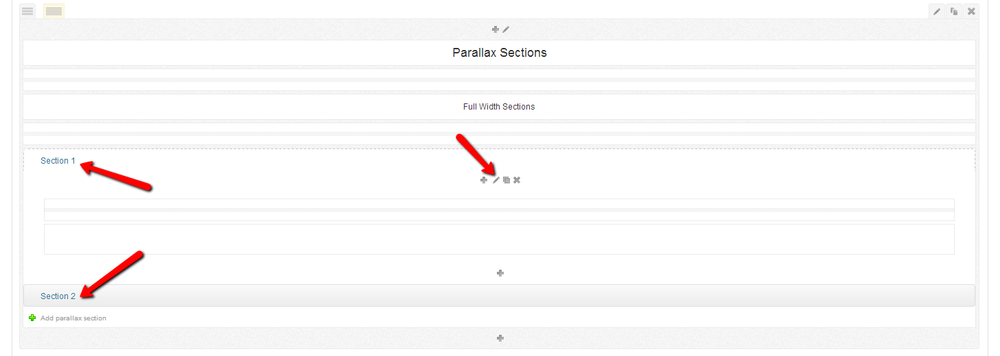
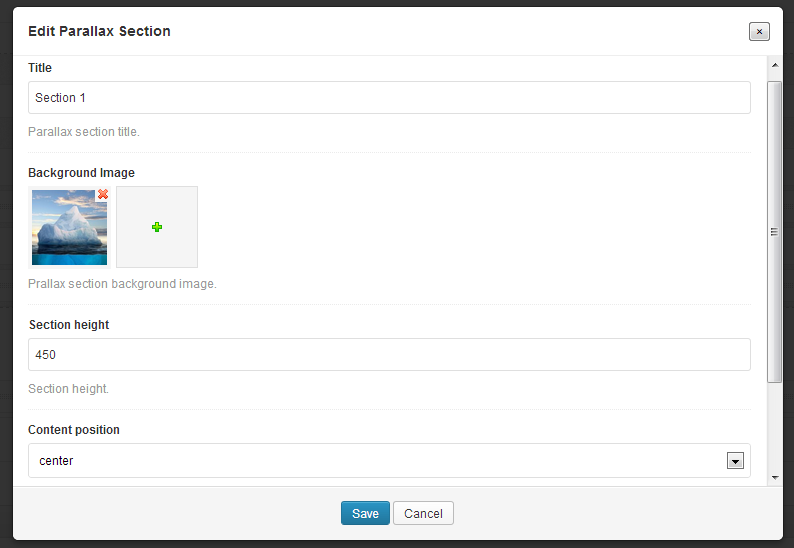
Pie Chart
- Percentage
- Percentage Color
- Bar Active Color
- Bar Inactive Color
- Pie Chart Line Width
- Title
- Title Color
- Title Tag: h2, h3, h4, h5 and h6
- Text
- Text Color

Pie Chart With Icon
- Percentage
- Bar Active Color
- Bar Inactive Color
- Pie Chart Line Width
- Title
- Title Color
- Icon: Font Awesome icons list (Font Awesome Icons)
- Icon Size: Tiny, Small, Medium, Large and Very Large
- Icon Color
- Title Tag: h2, h3, h4, h5 and h6
- Text
- Text Color
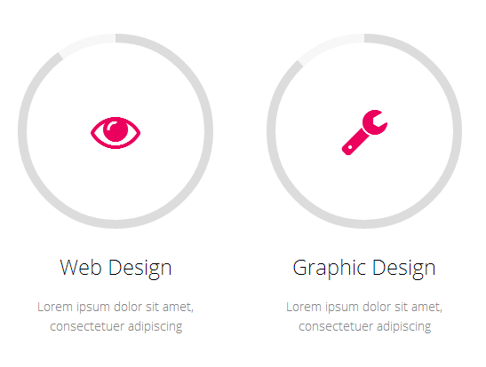
Pie Chart 2 (Pie)
- Width
- Height
- Legend Text Color
Pie Chart 3 (Doughnut)
- Width
- Height
- Legend Text Color
Portfolio List
- Type: Standard, Standard No Space, Hover Text and Hover Text No Space
- Columns: 2, 3, 4, 5 and 6
- Order By: Menu Order, Title and Date
- Order: ASC and DESC
- Filter: Yes / No
- Lightbox: Yes / No
- Show Load More: Yes / No
- Number: Number of portfolio items
- Category
- Selected Projects
- Title Tag: h2, h3, h4, h5 and h6
Standard

Standard No Space

Hover Text

Hover Text No Space

Portfolio Slider
- Order By: Menu Order, Title and Date
- Order: ASC and DESC
- Number: Number of portfolio items
- Category
- Selected Projects
- Lightbox: Yes / No
Pricing Table
- Title
- Price
- Currency
- Price Period
- Link
- Target: Self, Blank and Parent
- Button Text
- Active: Yes / No
- Content
Progress Bar – Horizontal
- Title
- Title Color
- Title Tag: h2, h3, h4, h5 and h6
- Percentage
- Percentage Color
- Active Background Color
- Inactive Background Color
- Progress bar Height (px)

Progress Bar – Vertical
- Title
- Title Color
- Title Tag: h2, h3, h4, h5 and h6
- Title Size
- Background Color
- Percent
- Percentage Text Size
- Percentage Color
- Text
Progress Bar – Icon
- Number of Icons
- Number of Active Icons
- Type: Normal, Circle and Square
- Icon: Font Awesome icons list (Font Awesome Icons)
- Icon Size: Tiny, Small, Medium, Large and Very Large
- Custom Size
- Icon Color
- Icon Active Color
- Background Color
- Background Active Color
Qode Carousels
- Carousel Slider
- Order By: Menu Order, Title and Date
- Order: ASC and DESC
- Control Pagination Style: Light and Dark
- Carousel Items
- Add New Carousel Item
- Carousels
In "Carousel Items" section you can see all items that you created.
Add New Carousel Item - Click here to add your first carousel item. First you need to upload some image for your carousel item. Find Carousel Image field and upload your image. Also you can upload hover image for this Carousel item, just find Carousel Hover Image field and click upload. Minimal width for image size is 220px.
- Link
- Target
These are settings for our About Us Carousel that is used in About Us Long page.
Service
- Type: Top and Left
- Title
- Title Color
- Link
- Target: Self, Blank and Parent
- Animate: Yes / No
- Content
If you set Animate to yes, service circle will fade in when it comes into the viewport.
Social Icons
- Icon: Font Awesome icons - Social list (Font Awesome Icons)
- Icon Size: Small, Normal and Large
- Link
- Target: Self, Blank and Parent
- Icon Color
- Background Color
Steps
- Number of Steps: 2, 3 and 4
- Number Color
- Number Background Color
- Image 1
- Step Number 1
- Step Link 1
- Step Link Target 1: Blank, Self, Parent and Top
- Image 2
- Step Number 2
- Step Link 2
- Step Link Target 2: Blank, Self, Parent and Top
- Image 3
- Step Number 3
- Step Link 3
- Step Link Target 3: Blank, Self, Parent and Top
- Image 4
- Step Number 4
- Step Link 4
- Step Link Target 4: Blank, Self, Parent and Top
Testimonials
- Type: Normal and Transparent
- Category
- Number
- Text Color
- Background Color
- Border Color
WooCommerce
Elision Theme comes with WooCommerce integration, which allows you to build online shop.
For more details on installing and configuring WooCommerce, please visit this page:
http://docs.woothemes.com/documentation/plugins/woocommerce/getting-started/
Elision Theme requires that WooCommerce CSS is not enabled in its settings.
In order to setup WooCommerce with our theme please perform following steps:
- Go to Plugins in the left menu
- Click on Add New
- Type "WooCommerce" in the search field
- Locate "WooCommerce - excelling eCommerce" in the search results and click on Install Now below it
- Once install is done, click on Activate Plugin
- You will see a notice saying "Welcome to WooCommerce – You're almost ready to start selling :)". If you plan to import demo content click on "Skin Setup"
- Go to Importing demo content instructions in the Introduction section of this document and perform the process explained there
- Once import is completed click on WooCommerce > Settings from the left menu
- Uncheck "Enable WooCommerce CSS" field and click Save
- Click on Pages tab of the WooCommerce Settings
- Select existing pages for all field except Terms Page ID. You will be able to find all pages easily as they match name of each field